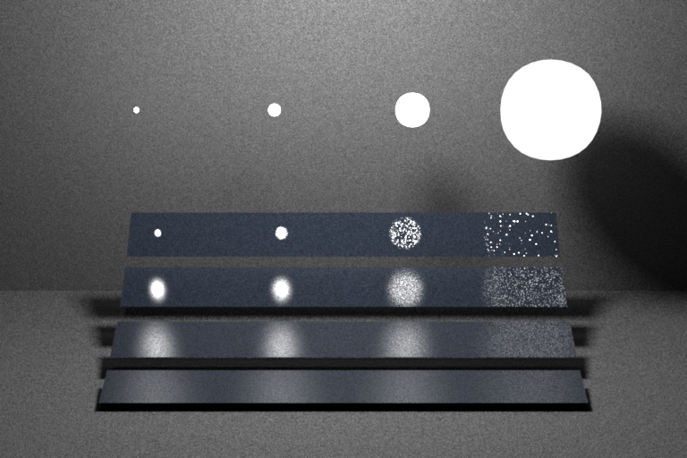

For the Microfacet class, sample(), eval() and pdf() methods were the primary implementation.
Following section will explain support methods implementations as well as the eval() method. Next section would
therefore focus on sample() and pdf() methods.
Evaluating the Microfacet BRDF
------------------------------
Provided support methods for these functions are represented as variables in the given formulas.
evaluateG1(): Computes and returns G(wi, wo, wh)
evaluateBeckmann(): Computes and returns D(wh)
evaluateFres(): Computes and returns F((wh . wi), ne, ni)
With the support of these functions, provided formulas were implemented. eval() method ensures corresponding vectors in the formula to
the above mentioned support methods. When we have our beckmann, fresnel and G1 variables, fr(wi,wo) is computed straightforward by utilizing the provided equation in Part 1.1.
Sampling the Microfacet BRDF
------------------------------
We start this section by deciding between specular and diffuse reflection.
If cosinus of incident ray with the current frame is greater than 0:
Diffuse(if sample.x() - m_ks > 0): Recompute sample.x(), with new sample.x() and old sample.y(),and set outgoing ray to 'squaretoCosineHemisphere' warped new 2d sample point.
Specular(else): Utilize 'squaretoBeckmann' warping on new 2d sample point to find a new distribution based normal. 2 * Normal.dot(wi) * Normal - wi(Reflecting incident direction using new computed notmal distribution). After normalizing this outgoing ray, return cosinus(wo) * eval() / pdf()
Since eval function is already provided in previous section, only remaining implementation to explain is pdf() function.
pdf() method return simly the sampling density by utilizing formula in Part 1.2 of assignment. We already have found our unknows for this equation with help of our support functions.
Validation
----------
Ajax (smooth):
Ajax (rough):
Brute force path tracer (15 points)
===================================
path_mats
Initial path tracer implementation follows the brute force tracing method. Instead of a recursive appraoch, we follow iterative approach instead.
Main condition of our iterative approach remains as before, which is that rayIntersect() remaining true.
If(intersection mesh is an emitter object), total_rad = total_rad + (radiance * throughput).
Throughput(throughput = throughput * sample()) would be updated with the new sample point in any case.
New ray(RayN) is computed from the intersection point and outgoing ray(in world coordinates).
Compute rayIntersect with RayN
Russian Roulette: If(iteration amount > 3): Normalize throughput dividing by the continuation probability and if(next sample > cont_prob): return total_rad
If loop would be terminated, we directly return the total_rad variable.
For the comparison of the results, we can clearly see that the rendering results are really similar to reference renderings, moreover the difference between them are very natural because of to the scattering event.
Validation
----------
Cornell box:
Veach material test scene:
Table test scene:
Path tracer with next event estimation (25 points)
==================================================
path_ems
Second path tracer implementation follows the next event estimation tracing method. Instead of a recursive appraoch, we follow iterative approach instead here as well.
Main condition of our iterative approach remains as before, which is that rayIntersect() remaining true.
We will have an additional boolean flag variable to enable next event estimation.
If(intersection mesh is an emitter object), total_rad = total_rad + (radiance * throughput).
If(Diffuse): flag = false, sample a light source from one of the meshes with emitters(get its radiance), and finally total_rad = total_rad + (radiance * throughput * eval(ray_new_formed_from sampled_light_src))
Else: flag = true
Throughput(throughput = throughput * sample()) would be updated with the new sample point in any case.
New ray(RayN) is computed from the intersection point and outgoing ray(in world coordinates).
Compute rayIntersect with RayN
Russian Roulette: If(iteration amount > 3): Normalize throughput dividing by the continuation probability and if(next sample > cont_prob): return total_rad
If loop would be terminated, we directly return the total_rad variable.
For the comparison of the results, we can clearly see again that the rendering results are really similar to reference renderings as expected.
(!!!) Continuation probability is not the same as in Brute Force Path tracer.
(!!!) Flag variable controls our next event estimation.
Some additional functionality were requiredi such as sampleUniformSurface() method of Mesh class.
This method returns a sample uniform surface sample point as well as its dpdf constant and surface normal.
We have ensured scene class with a variable called meshesWithEmitters, since we do need to choose our sample in diffuse part from a mesh that has has emitter.
For this, a new variable has been added to scene, that does not include meshes without emitters, and lastly, an accessor function has been written to access this variable.
Validation
----------
Cornell box:
Veach material test scene:

Table test scene:
Path tracer with Multiple Importance Sampling (30 points)
=========================================================
path_mis
Last path tracer implementation follows the multple importance sampling method. Instead of a recursive appraoch, we follow iterative approach instead here as well.
Before starting our iteration, we will initialize total_rad in case there is an intersection, and the intersection mesh is a emitter mesh, where as we check in cosinus of negative ray direction in local coordinates.
Main condition of our iterative approach remains as before, which is that rayIntersect() remaining true.
If(intersection mesh is an emitter object), total_rad = total_rad + (radiance * throughput).
If(Diffuse): flag = false, sample a light source from one of the meshes with emitters(get its radiance), and finally total_rad = total_rad + (radiance * throughput * eval(ray_new_formed_from sampled_light_src) * weight_1)
Throughput(throughput = throughput * sample()) would be updated with the new sample point in any case.
New ray(RayN) is computed from the intersection point and outgoing ray(in world coordinates).
Compute rayIntersect with RayN
if(isIntersect and new intersection mesh is emitter):Emitter sampling, get incoming radiance from new intersection, and total_rad = total_rad + (weight_2 * incoming radiance * throughput)
Russian Roulette: If(iteration amount > 3): Normalize throughput dividing by the continuation probability and if(next sample > cont_prob): return total_rad
If loop would be terminated, we directly return the total_rad variable.
For the comparison of the results, we can clearly see again that the rendering results are really similar to reference renderings,
though compared to reference image we still can witness noise. However, noise level is within the expected interval, as the current implementation passes the tests as well.
(!!!) Continuation probability is not the same as in Brute Force Path tracer, but same with next event estimation.
(!!!) Helpers class has been added with balanceheuristic method. Power of 2 version has proven better results.
(!!!) Balance Heuristic used for weighting: f / (f+g)
(!!!) Weight1 = light_pdf / (light_pdf + bsdf_pdf)
(!!!) Weight2 = bsdf_pdf / (light_pdf + bsdf_pdf)
Validation
----------
Cornell box:
Veach material test scene:
Table test scene:
Feedback
========
We would appreciate any comments or criticism to improve the projects in future years--naturally, this part will not be graded. Examples of information that is useful to us includes:
* How much time did you spend on the assignment? How was it divided between designing, coding, and testing?
* What advice should we have given you before you started?
* What was hard or surprising about the assignment?
* What did you like or dislike? What else would you change?